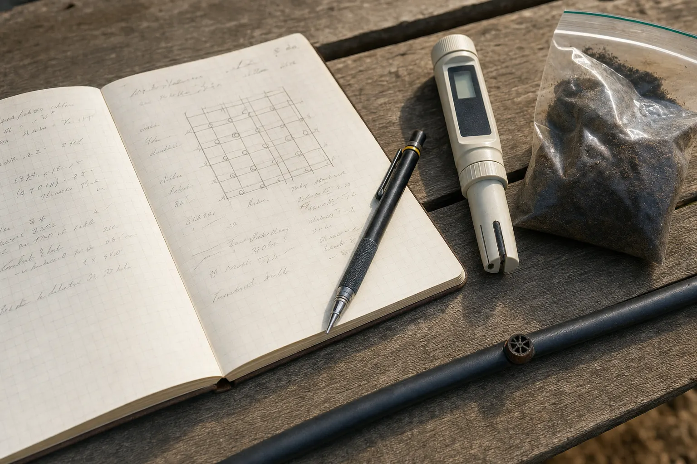

Caso 01 · Hortalizas · Aire libre
La desuniformidad del cultivo reproducía la desuniformidad del riego
Un cultivo de brócoli presentaba plantas de tamaño desigual. La evaluación identificó diferencias en la entrega de agua dentro del sector.
Ver caso →